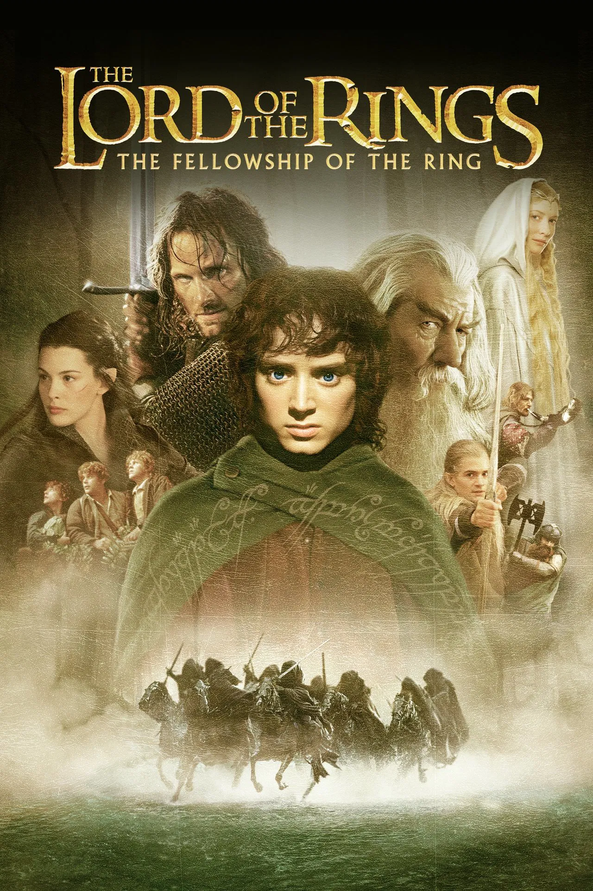
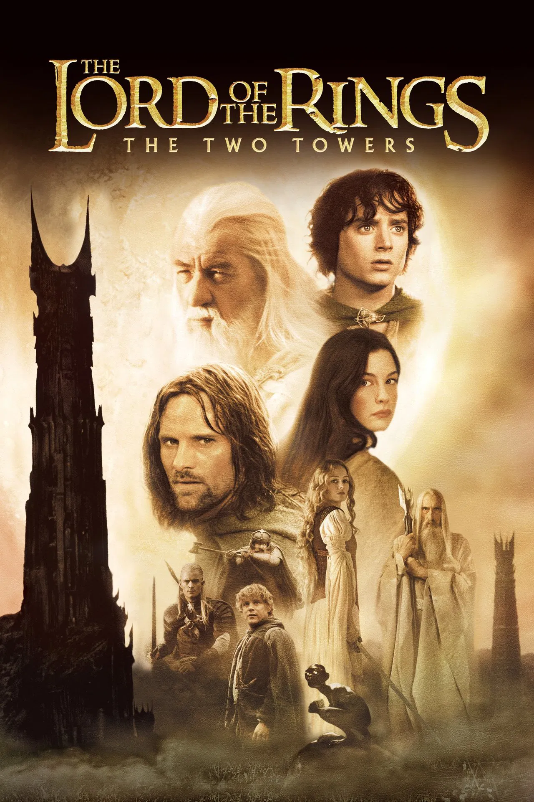
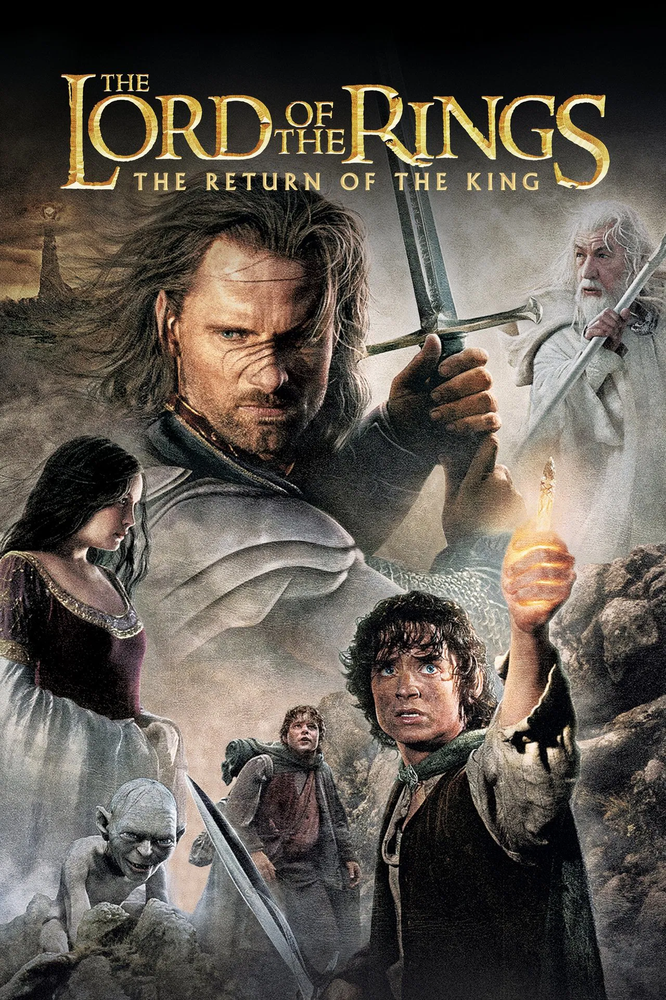

Hola, soy Leandro Ferrero, un ex cocinero que, buscando un cambio de rumbo, comenzó a estudiar programación.
Pasé por la UTN y realicé cursos en Codo a Codo de QA Testing, Fullstack Python y PHP.
También me especialicé en videojuegos (Unity 2D y 3D) en Talento Tech. Actualmente me encuentro en la busqueda de mi primer trabajo en IT.
Mi misión es fusionar la disciplina de la alta cocina con la lógica del desarrollo de software.
Habilidades
Estas son algunas de las habilidades que poseo, o al menos las que mejor domino.
C# & .NET
Desarrollo de aplicaciones robustas y lógica de backend.
Unity 2D/3D
Creación y programación de videojuegos.
Python & PHP
Desarrollo fullstack y scripting para soluciones versátiles.
QA Testing
Aseguramiento de calidad y metodologías de prueba.
Kotlin
Desarrollo de aplicaciones móviles para Android.
Mis 3 Películas Favoritas
Estas son mis 3 películas favoritas de todos los tiempos. Tengo la costumbre de verlas al menos una vez por año; si es en su versión extendida, mejor.
El Señor de los Anillos: La comunidad del anillo

Un joven hobbit llamado Frodo Bolsón recibe un anillo con el poder de dominar la Tierra Media.
Junto a ocho compañeros de distintas razas, inicia una épica travesía hacia el Monte del Destino
para destruir el artefacto y salvar a la Tierra Media de la oscuridad de Sauron.
El Señor de los Anillos: Las dos Torres

Con la Comunidad fragmentada, Frodo y Sam continúan su peligroso camino hacia Mordor guiados por la criatura Gollum.
Mientras tanto, Aragorn, Legolas y Gimli se preparan para defender el reino de Rohan en la legendaria batalla del
Abismo de Helm contra las hordas de Saruman.
El Señor de los Anillos: El retorno del rey

La batalla final por la Tierra Media comienza. Mientras las fuerzas de Sauron asedian Minas Tirith,
Aragorn debe reclamar su trono para liderar a los hombres en una lucha desesperada. Al mismo tiempo, Frodo y Sam alcanzan los fuegos del Monte del Destino para el desenlace de su misión.
Mis 3 Discos Favoritos
Mi gusto en la musica va variando, por lo que me es dificil nombrar 3 discos favoritos, pero estos son los 3 que mas escucho actualmente.